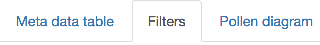
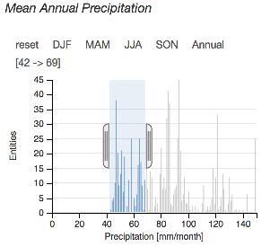
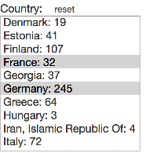
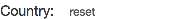
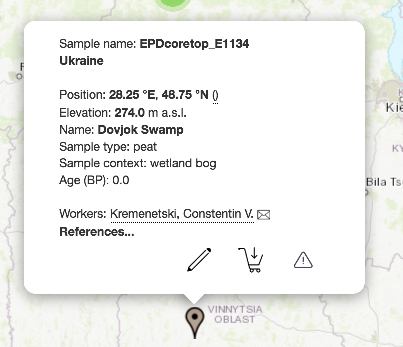
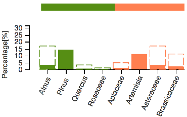

Citing the EMPD:
If you use data in your publications, please cite the corresponding publications of version 1 and 2:- Davis, B. A. S., Chevalier, M., Sommer, P., et al.: The Eurasian Modern Pollen Database (EMPD), version 2, Earth Syst. Sci. Data, 12, 2423–2445, https://doi.org/10.5194/essd-12-2423-2020, 2020.
- Davis, B.A.S., Zanon, M., Collins, P. et al.: The European Modern Pollen Database (EMPD) project, Veget Hist Archaeobot (2013) 22: 521. https://doi.org/10.1007/s00334-012-0388-5
Description:
This viewer allows you to interactively explore and download samples from the Eurasian Modern Pollen Database (EMPD).Filtering the data
 Click the Filters tab to apply filters to the database You can apply filters on meta informations such as precipitation, temperature, age uncertainty, etc. by interacting with the charts. All charts are linked together so that filters applied in one chart will update the others, as well as the map.
 Some meta data is filtered by menus. Simply select the entry in the menu to apply a filter.
 To cancel a filter, click on "reset".
Navigating the map
 You can view information about a sample (name, site, position, etc.) when you click on one of the markers. If you hover over it with your mouse, the sample will also be highlighted in bold text in the Meta data table tab. When several proxies share the same location, they are grouped together in a cluster (colored circles).
Click on a cluster to display all the proxies it contains.
When several proxies share the same location, they are grouped together in a cluster (colored circles).
Click on a cluster to display all the proxies it contains.
 Red clusters represent more than 100 proxies, yellow clusters contain more than 10, and all others are green.
Red clusters represent more than 100 proxies, yellow clusters contain more than 10, and all others are green.
Accessing the sample Data
 When you click on a sample in the map, you can see the pollen percentages in the Pollen diagram tab below it. Additionally, you can see a diagram of Precipitation and Temperature based on the data from WorldClim in the Climate diagram tab.
Additionally, you can see a diagram of Precipitation and Temperature based on the data from WorldClim in the Climate diagram tab.
 You can select samples through the
You can select samples through the  button. Either use the popup or the checkbox in the Meta data table to select a single sample, or use the button below the map to select all currently selected samples.
button. Either use the popup or the checkbox in the Meta data table to select a single sample, or use the button below the map to select all currently selected samples.
To download the data, as a tab-separated file, use the
 button.
button.
Technical architecture:
This application uses following javascript libraries:
- dc.js Dimensional Charting Javascript Library
https://dc-js.github.io/dc.js/ - dc-addons to dc.js
https://github.com/Intellipharm/dc-addons - Crossfilter for Fast Multidimensional Filtering for Coordinated Views
https://github.com/crossfilter/crossfilter - D3.js for Data-Driven Documents
http://d3js.org - Leaflet Open-Source JavaScript Library for Mobile-Friendly Interactive Maps
http://leafletjs.com - json-editor An HTML editor for JSON objects
https://github.com/json-editor/json-editor/
Open source code:
This application was created and developed by Philipp S. Sommer. The source code is available at: https://github.com/EMPD2/EMDP2.github.io
Credits:
This application is inspired by the ClimateProxiesFinder, developed by Patrick Brockmann (CEA - LSCE).
Shopping cart, pencil and alert icons are downloaded from Icons8